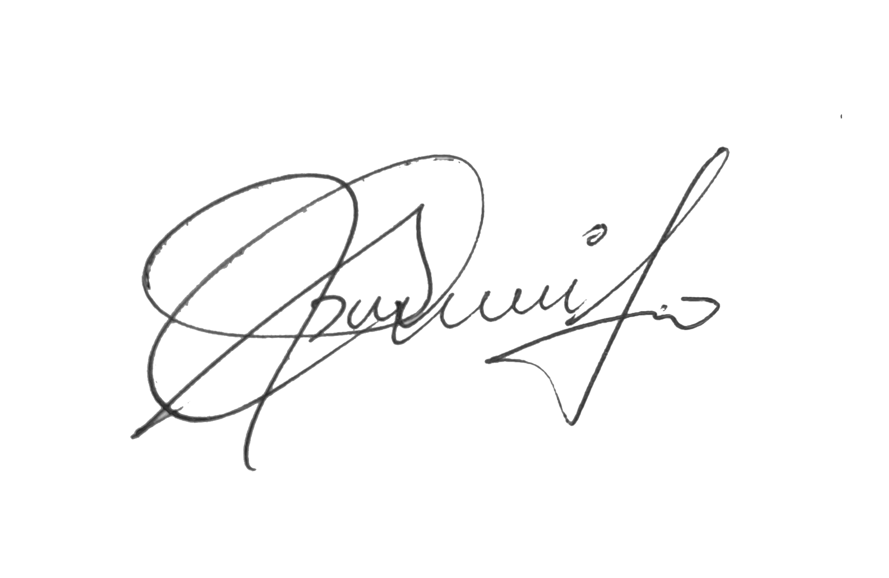

Message from Secretary general
To the members of the ….. GRIET-MUN community,
On behalf of the entire organising committee, it is my pleasure to extend to you an invitation to the first edition of …MUN. The conference will be held on 11th and 12th October, 2019 at GRIET.
A Model United Nations is an academic simulation of the United Nations in which participants assume the role of diplomats from different countries and deliberate over international issues. While the direct lessons from MUNs are manifold, the indirect benefits are the ones that stay with you for a lifetime. The ability to dissect and analyse seemingly complex concepts, to acknowledge and understand the multifaceted nature of problems, and most importantly, to actively listen to friends and foes alike, is what shelves MUNs in the “invaluable” section of the library that is life.
GRIET-MUN 2019 will have three committees whose agendas are both relevant and interesting. With an all-star Organising Team, dynamic and experienced Executive Board, and the perfect set of committees, I have inveterate confidence that we will uphold the highest standards of debate.
With that, mesdames et messieurs(Ladies and Gentlemen), I welcome you to embark upon this two day journey of intense debate, simulating discussions and shrewd diplomacy, in what we hope turns out to be one of the most memorable experiences of your life.
With Regards

Pranavi
Secretary-General
GRIET MUN 2019